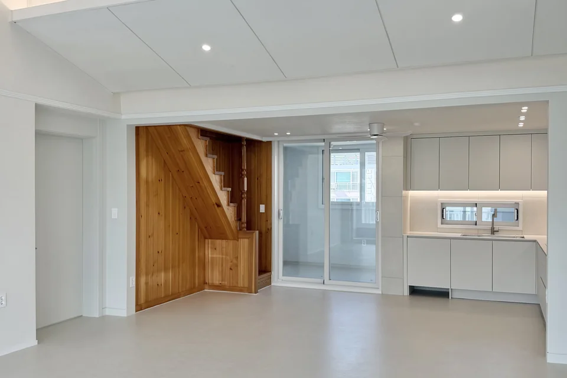
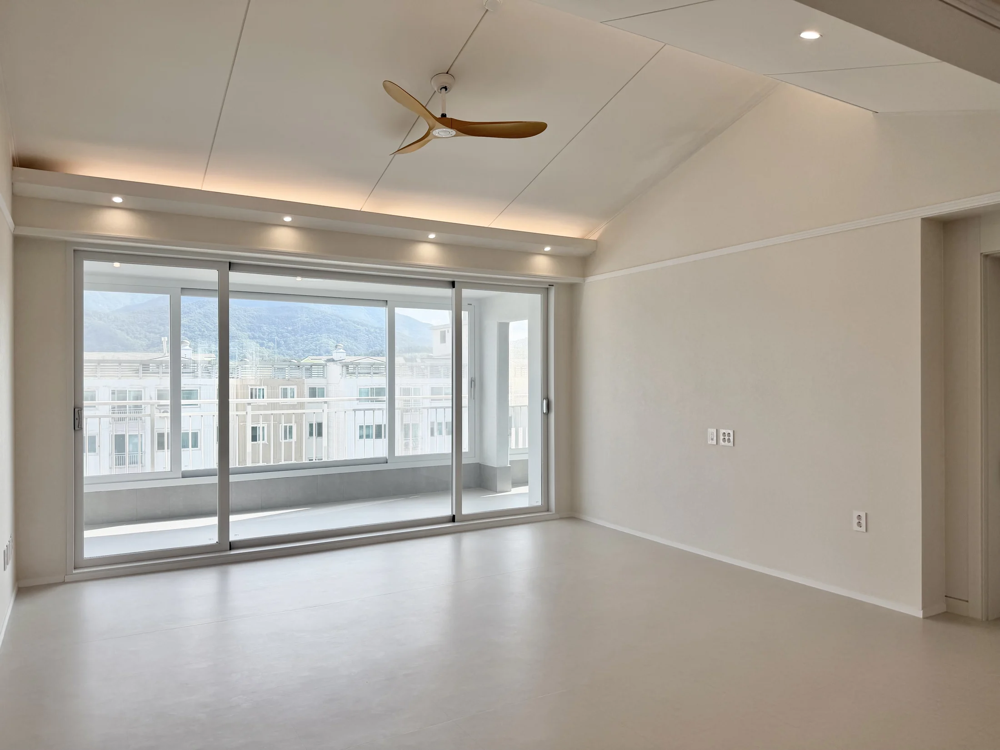
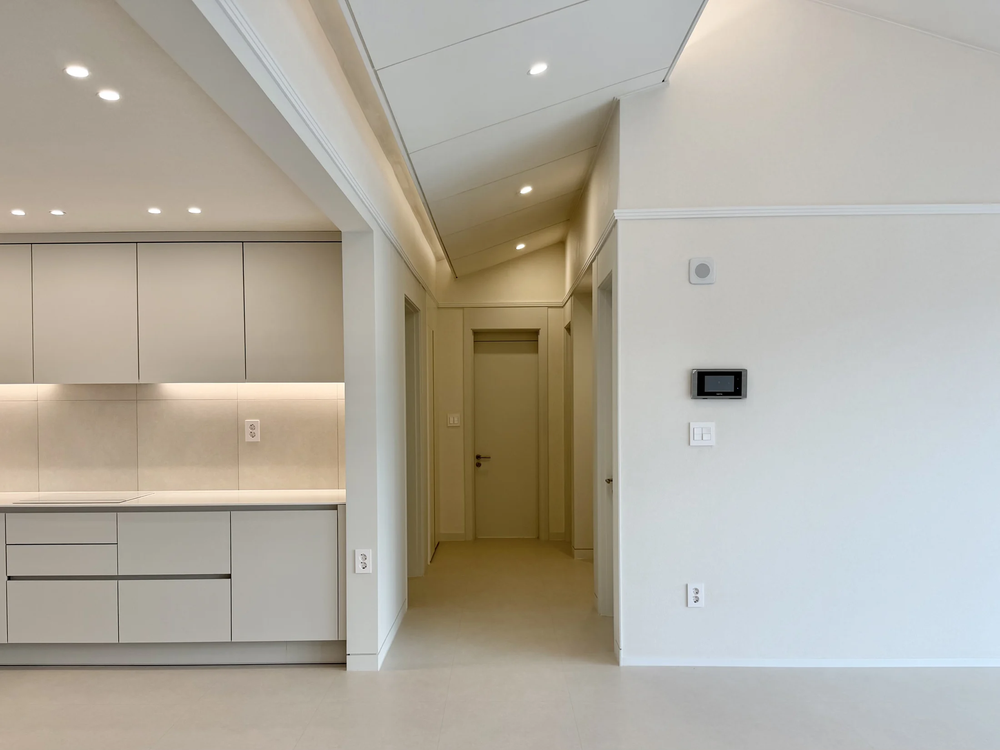
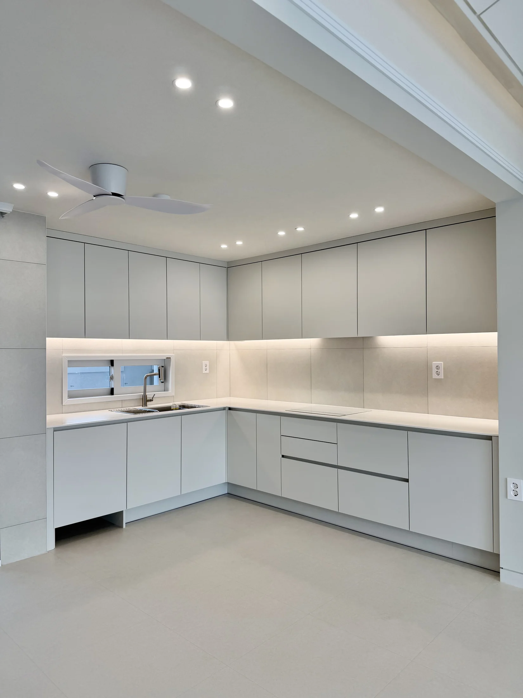
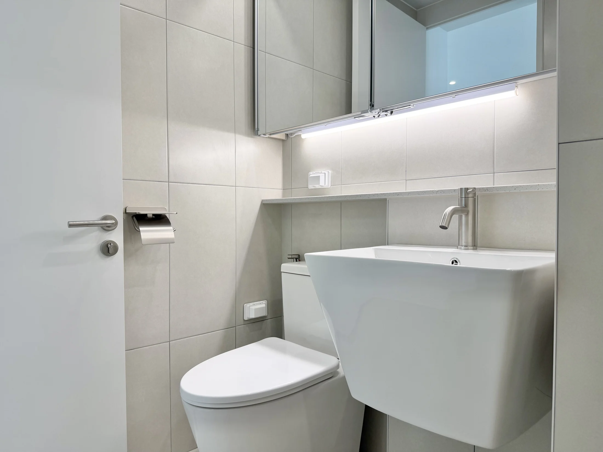

기존 상태
탑층 구조와 거실, 주방, 방, 욕실의 사용 방식을 공간별로 다시 살핀 현장입니다.
설계 판단
특정 요소 하나를 강조하기보다 이동과 수납, 공간 사이 연결이 자연스럽도록 기준을 잡았습니다.
주요 시공
현관, 거실, 주방, 침실과 욕실을 나눠 시공하고 각 공간의 마감선을 정돈했습니다.
완공 결과
탑층의 면적을 생활에 편하게 사용할 수 있도록 공간별 기능이 분명한 집으로 완성했습니다.

탑층 구조와 거실, 주방, 방, 욕실의 사용 방식을 공간별로 다시 살핀 현장입니다.
특정 요소 하나를 강조하기보다 이동과 수납, 공간 사이 연결이 자연스럽도록 기준을 잡았습니다.
현관, 거실, 주방, 침실과 욕실을 나눠 시공하고 각 공간의 마감선을 정돈했습니다.
탑층의 면적을 생활에 편하게 사용할 수 있도록 공간별 기능이 분명한 집으로 완성했습니다.



